新公会入驻
缺少明确的经营方向
TikTok LIVE UX Project AI Visual Design
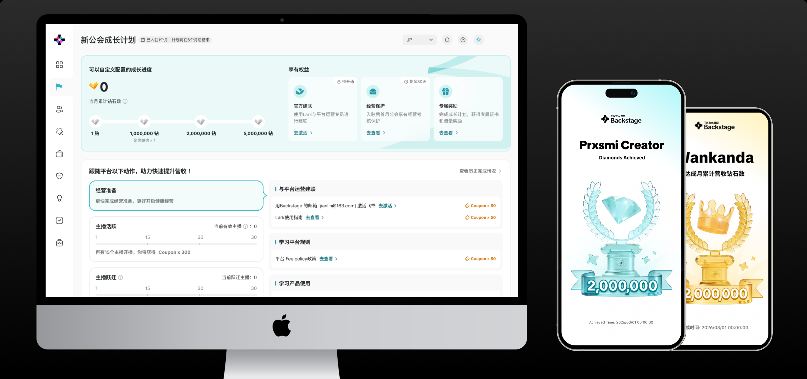
本次新手村体验设计主要将公会成长路径拆解成若干个关键的营收 milestone，并将主播招募、开播、活跃等牵引公会成长的核心指标和关键数值拐点线上化，通过新手村对新公会规模化运营。
新公会在早期阶段，往往缺少明确且正向的经营方向。新手村将招募、开播等关键动作组织为逐级解锁的成长任务，同时在过程中提供进度反馈。
缺少明确的经营方向
明确阶段目标与成长重点
主播招募｜主播开播｜主播活跃
奖励｜权益｜成长认可
Q3 业务在推进全球不同区域的新手村任务迭代过程中发现了以下三个核心问题
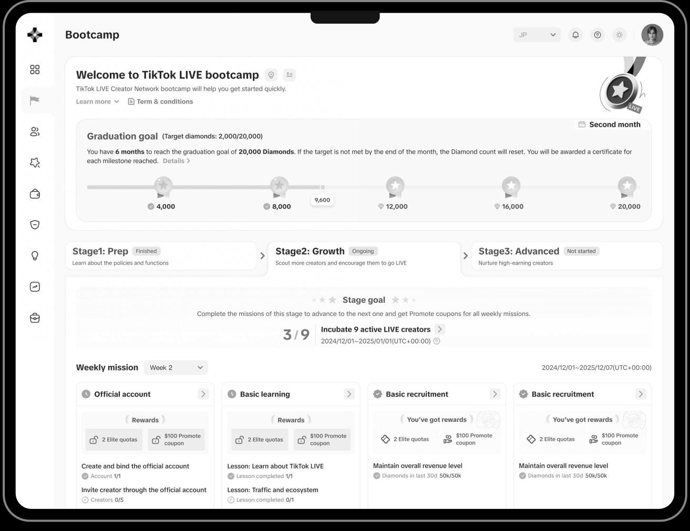
例如 EMEA 希望将成长阶段从 3 段增加到 4 段，当前框架无法支持，改造迭代周期约 1.5 个月。
不同公会的成长速度和经营能力差异很大，但旧系统提供同一套任务，平台无法判断谁最需要帮助，也无法提供分层引导。
不同区域对“公会成长”的定义不一致。EU 更关注营收，LATAM 更关注主播招募，因此全球业务之间缺少一套共同语言。
随着业务向全球不同区域拓展，新手任务体系逐渐暴露出框架适配与成长激励两类核心问题
新区域、新阶段，新框架能否低成本适配？
公会能否理解成长目标，并愿意采取行动？
通过可配置、可扩展的成长框架适配业务变化，并以清晰的任务体验降低公会的理解与行动成本
通过可配置、可扩展的成长框架适配业务变化，并以清晰的任务体验降低公会的理解与行动成本
新区域、新阶段，新框架能否低成本适配？
固定阶段—目标—任务—反馈的成长骨架
统一用户认知，减少重复建设
新区域、新阶段，新框架能否低成本适配？
将等级门槛、任务条件和奖励内容拆分为可配置模块
快速适配不同等级、区域和运营策略
公会能否理解成长目标，并愿意采取行动？
将公会的成长阶段、差距、下一步行动与回报显性呈现
让公会看懂、愿意做，并持续向下一阶段成长
无论等级、区域和经营目标如何变化，公会始终通过同一套结构理解自身成长
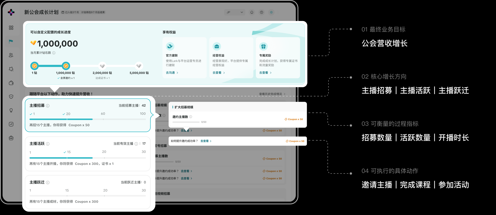
中台统一成长方向，区域根据本地业务配置具体指标与动作，新增任务无需重新开发
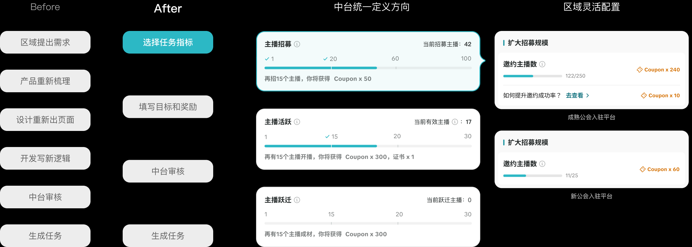
中台统一成长模型，区域根据本地业务灵活配置目标、任务与奖励，新增任务无需重复开发
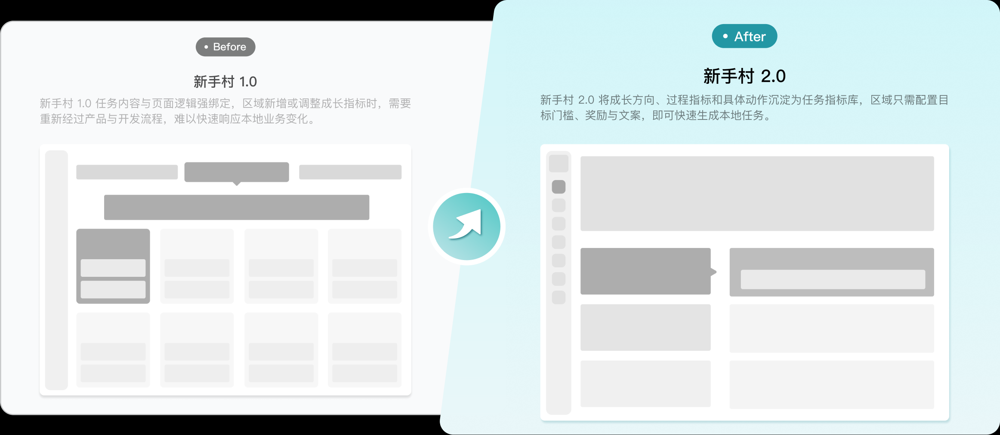
让公会知道我在哪、我该怎么做，以及做了有什么用
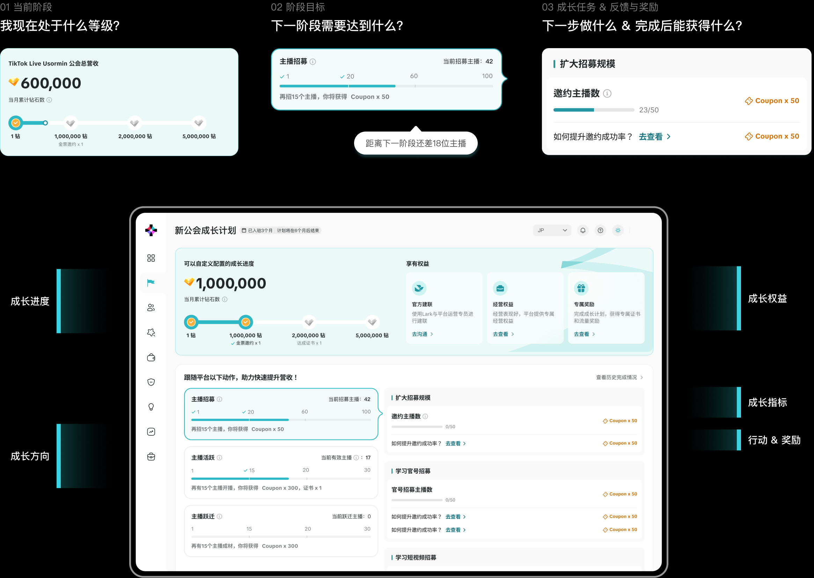
把“做了能得到什么”和“为什么持续做”嫁接到身份认同，形成正向激励
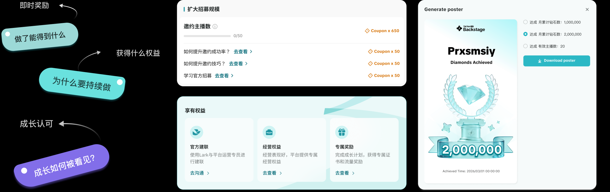
让阶段成果可见、可纪念、可分享，持续强化公会的成长身份
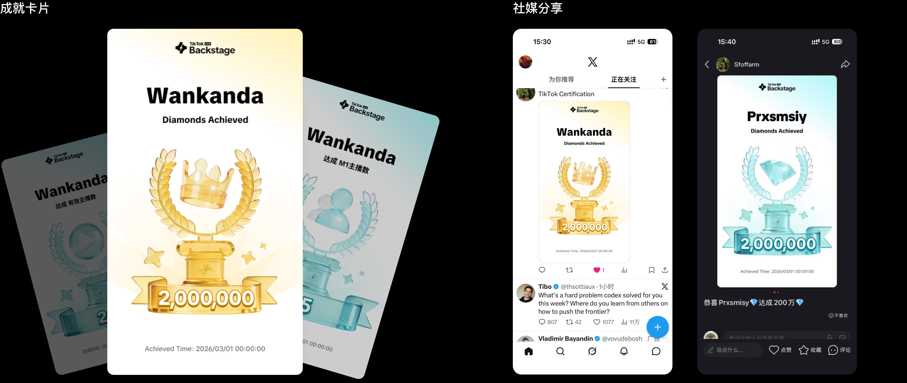
新手村框架在试点区域上线后得到了明显的数据验证
试点区域新公会成材率提高比
成材率从 1.3% → 2.3%，相对增幅约 77%
达到同期未启用区域的 2.1 倍
围绕风格统一、生成可控与协作提效，沉淀视觉定义、Prompt 约束、标准化生成流程与图片微调方法，保障 AIGC 素材稳定复用和规模化产出。
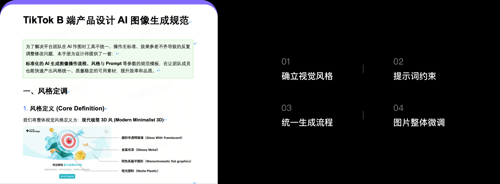
以轻质感、高明度、品牌色和微动态为核心，建立统一、可复用的 AIGC 视觉语言。
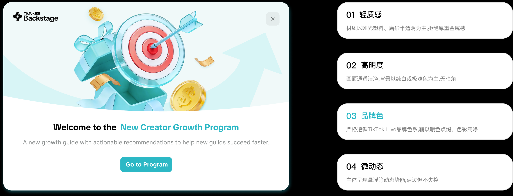
帮助大家快速达到画面效果，但仍需对画面进行后期微调。提示词的核心在于描述的完整性与准确性。
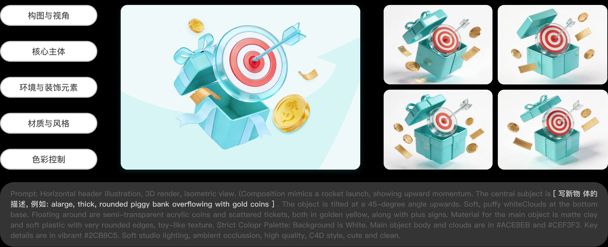
AI 生成图像需要精细化调整，才能适配业务需求并解决色调、构图和物体瑕疵等问题。
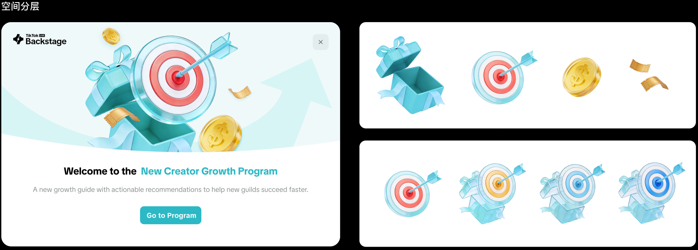
形成完整生成规范后，平台视觉产出更加统一，目前正沉淀 PE 改写工具以进一步提升视觉产出。
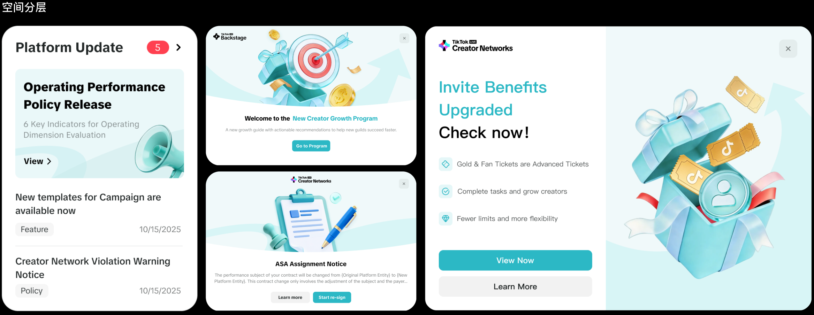